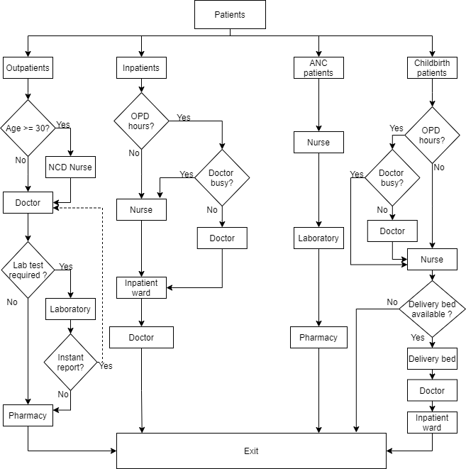
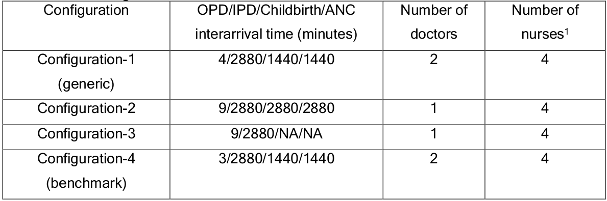
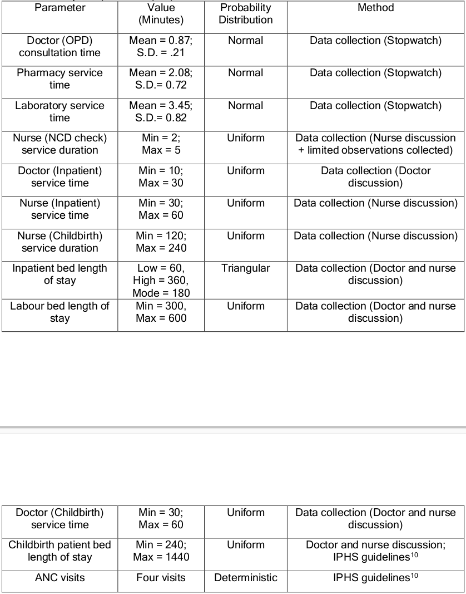
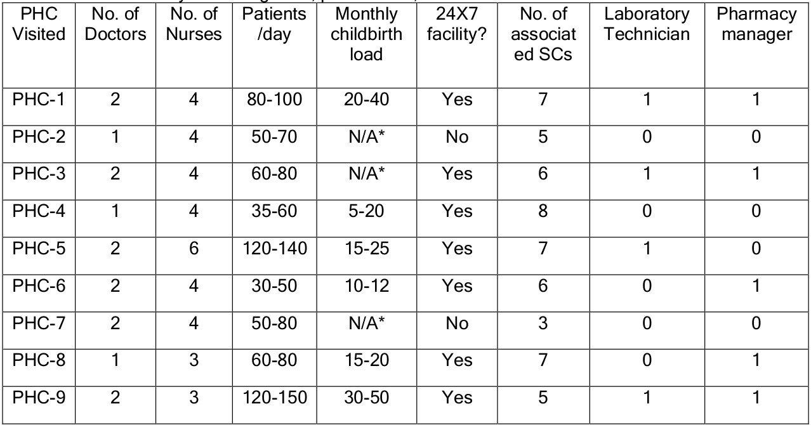
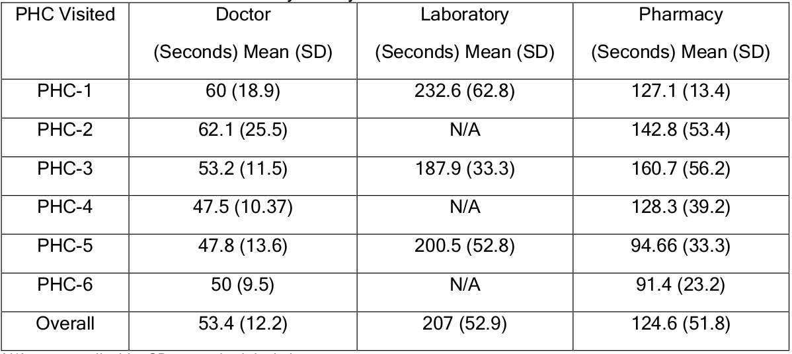

Reporting guidelines
This page evaluates the extent to which the journal article meets the criteria from two discrete-event simulation study reporting guidelines:
- Monks et al. (2019) - STRESS-DES: Strengthening The Reporting of Empirical Simulation Studies (Discrete-Event Simulation) (Version 1.0).
- Zhang, Lhachimi, and Rogowski (2020) - The generic reporting checklist for healthcare-related discrete event simulation studies derived from the the International Society for Pharmacoeconomics and Outcomes Research Society for Medical Decision Making (ISPOR-SDM) Modeling Good Research Practices Task Force reports.
As cited throughout, any extracts from the paper on this page are sourced from Shoaib and Ramamohan (2021), which is shared under CC BY-NC-ND.
STRESS-DES
Of the 24 items in the checklist:
- 17 were met fully (✅)
- 6 were partially met (🟡)
- 1 was not met (❌)
| Item | Recommendation | Met by study? | Evidence |
|---|---|---|---|
| Objectives | |||
| 1.1 Purpose of the model | Explain the background and objectives for the model | ✅ Fully | Extensive description of healthcare context, gaps in the literature, and how this model addresses these. For example, from the Introduction: • The model “can provide researchers and analysts in other countries with similar hierarchical public health systems with a template for developing models of similar primary/secondary healthcare facilities” • “We found very limited work that utilises a generic modelling approach for simulating primary healthcare delivery facilities that handle multiple patient types (with distinct clinical and operational flows through multiple facility units) and services (the PHC provides outpatient care, childbirth, antenatal services, limited inpatient care, pharmacy and clinical laboratory services). Thus, another key research contribution of this study involves addressing the above research gap.” Shoaib and Ramamohan (2021) |
| 1.2 Model outputs | Define all quantitative performance measures that are reported, using equations where necessary. Specify how and when they are calculated during the model run along with how any measures of error such as confidence intervals are calculated. | 🟡 Partially | A few example measures are mentioned in the Introduction: “Operational outcomes such as the average waiting time of patients for various resources (e.g., doctors, pharmacy, clinical laboratory), resource utilisation levels across the PHC, and the proportions of childbirth patients who wait longer than a certain time threshold.”In Table 6, a few measures are briefly defined - e.g. “Mean length of pharmacy queue (number of patients)”. However, many measures are not defined.Shoaib and Ramamohan (2021) |
| 1.3 Experimentation aims | If the model has been used for experimentation, state the objectives that it was used to investigate. (A) Scenario based analysis – Provide a name and description for each scenario, providing a rationale for the choice of scenarios and ensure that item 2.3 (below) is completed. (B) Design of experiments – Provide details of the overall design of the experiments with reference to performance measures and their parameters (provide further details in data below). (C) Simulation Optimisation – (if appropriate) Provide full details of what is to be optimised, the parameters that were included and the algorithm(s) that was be used. Where possible provide a citation of the algorithm(s). |
✅ Fully | Scenarios were sufficiently described throughout that I was able to reproduce (although language could be a little bit ambiguous in some places). Example of scenario description from 4.3.1 Doctor's Utilisation: “The sensitivity analyses reveal that at an average outpatient load of 170 patients per day, the utilisation of doctors increases substantially with increases in the mean service time and exceeds 100% at an average consultation time of five minutes/patient, implying that doctors may stay longer than the designated working hours to serve all patients arriving within the designated working hours. To address this, we experimented with letting the staff nurse (whose utilisation is approximately 32%) take over the administrative work. This led to a 12% drop in the utilisation level, which implied that the doctor’s utilisation still exceeded 100%.”Shoaib and Ramamohan (2021) |
| Logic | |||
| 2.1 Base model overview diagram | Describe the base model using appropriate diagrams and description. This could include one or more process flow, activity cycle or equivalent diagrams sufficient to describe the model to readers. Avoid complicated diagrams in the main text. The goal is to describe the breadth and depth of the model with respect to the system being studied. | ✅ Fully | Figure 1: Patient flow in the archetypal PHC Shoaib and Ramamohan (2021) |
| 2.2 Base model logic | Give details of the base model logic. Give additional model logic details sufficient to communicate to the reader how the model works. | ✅ Fully | Model configurations described extensively in 3.3 Patient Flow. |
| 2.3 Scenario logic | Give details of the logical difference between the base case model and scenarios (if any). This could be incorporated as text or where differences are substantial could be incorporated in the same manner as 2.2. | ✅ Fully | Difference between model configurations are described extensively throughout 3 Model Development, and information on scenarios is provided in 4 Simulation Experiments and Results.Table 3: PHC configurations Shoaib and Ramamohan (2021) |
| 2.4 Algorithms | Provide further detail on any algorithms in the model that (for example) mimic complex or manual processes in the real world (i.e. scheduling of arrivals/ appointments/ operations/ maintenance, operation of a conveyor system, machine breakdowns, etc.). Sufficient detail should be included (or referred to in other published work) for the algorithms to be reproducible. Pseudo-code may be used to describe an algorithm. | ✅ Fully | Provides information on processes in 3.4 Estimation of Simulation Parameters and Table 4: Facility independent input parameters Shoaib and Ramamohan (2021) |
| 2.5.1 Components - entities | Give details of all entities within the simulation including a description of their role in the model and a description of all their attributes. | ✅ Fully | Each patient type is described in 3.3 Patient Flow (3.3.1 Outpatient Department, 3.3.2 Inpatient Department, 3.3.3 Childbirth Patients, 3.3.4 ANC Patients) |
| 2.5.2 Components - activities | Describe the activities that entities engage in within the model. Provide details of entity routing into and out of the activity. | ✅ Fully | Activities are described in 3.3 Patient Flow and illustrated in Figure 1: Patient flow in the archetypal PHCShoaib and Ramamohan (2021) |
| 2.5.3 Components - resources | List all the resources included within the model and which activities make use of them. | ✅ Fully | The resources are listed in 3.3 Patient Flow - “All PHC resources – doctors, NCD nurses, staff nurses, pharmacy, the laboratory – are shared by all patient types, where applicable”. Their use is then described in that section, and illustrated in Figure 1: Patient flow in the archetypal PHCShoaib and Ramamohan (2021) |
| 2.5.4 Components - queues | Give details of the assumed queuing discipline used in the model (e.g. First in First Out, Last in First Out, prioritisation, etc.). Where one or more queues have a different discipline from the rest, provide a list of queues, indicating the queuing discipline used for each. If reneging, balking or jockeying occur, etc., provide details of the rules. Detail any delays or capacity constraints on the queues. | ✅ Fully | Described in 3.3 Patient Flow - for example, 3.3.2 Inpatient Department: “inpatients have nonpreemptive priority in comparison to outpatients with regard to consulting with the doctor – that is, if the doctor is busy with an outpatient when an inpatient arrives, the inpatient moves to the head of the outpatient queue. The doctor then attends to the inpatient once they are finished consulting with the outpatient” |
| 2.5.5 Components - entry/exit points | Give details of the model boundaries i.e. all arrival and exit points of entities. Detail the arrival mechanism (e.g. ‘thinning’ to mimic a non-homogenous Poisson process or balking) | ✅ Fully | Model boundaries clearly illustrated by Figure 1: Patient flow in the archetypal PHC. (Entry at top, exit at bottom).Arrival mechanism described in 3.4 Estimation of Simulation Parameters, e.g. “Patient arrival (for all four patient types, and for each configuration) is modeled by using an exponential distribution for the interarrival time”Shoaib and Ramamohan (2021) |
| Data | |||
| 3.1 Data sources | List and detail all data sources. Sources may include: • Interviews with stakeholders, • Samples of routinely collected data, • Prospectively collected samples for the purpose of the simulation study, • Public domain data published in either academic or organisational literature. Provide, where possible, the link and DOI to the data or reference to published literature. All data source descriptions should include details of the sample size, sample date ranges and use within the study. |
✅ Fully | Very detailed description. Examples…3.1 Generic Modelling Approach and PHC Operational Data Collection:“We visited nine PHCs (out of ten total) in a north Indian district with a mix of urban, semi-urban, and rural populations to collect data regarding PHC operations. Permission to visit these PHCs and collect operational data was obtained from the district civil surgeon. Data collected included operational patterns (e.g., patient flow), staffing and resource levels”…Table 1: Data summary of staffing level, patient load and other facilities at PHCs  Table 2: Service time summary for key PHC resources  3.2.1 Benchmark PHC Configuration: “we estimated the demand for primary care using morbidity data from the Brookings India report. We used the disease incidence data reported for a ten-month period in India from the Brookings report to estimate the number of people seeking medical care in the district where thePHCs we visited were located. Next, using the percentage contribution of each disease”… (continues)Shoaib and Ramamohan (2021) |
| 3.2 Pre-processing | Provide details of any data manipulation that has taken place before its use in the simulation, e.g. interpolation to account for missing data or the removal of outliers. | ✅ Fully | Detailed description, with examples as for 3.1 Data sources. |
| 3.3 Input parameters | List all input variables in the model. Provide a description of their use and include parameter values. For stochastic inputs provide details of any continuous, discrete or empirical distributions used along with all associated parameters. Give details of all time dependent parameters and correlation. Clearly state: • Base case data • Data use in experimentation, where different from the base case. • Where optimisation or design of experiments has been used, state the range of values that parameters can take. • Where theoretical distributions are used, state how these were selected and prioritised above other candidate distributions. |
🟡 Partially | Nearly all information required was provided, with examples like Table 3: PHC configurationsThe exception is that sometimes the number of arrivals per day is provided, but the required interarrival time to model this is not provided, nor a formula for calculation of this. Shoaib and Ramamohan (2021) |
| 3.4 Assumptions | Where data or knowledge of the real system is unavailable what assumptions are included in the model? This might include parameter values, distributions or routing logic within the model. | ✅ Fully | Has a section dedicated to this: 3.4.1 Model Assumptions |
| Experimentation | |||
| 4.1 Initialisation | Report if the system modelled is terminating or non-terminating. State if a warm-up period has been used, its length and the analysis method used to select it. For terminating systems state the stopping condition. State what if any initial model conditions have been included, e.g., pre-loaded queues and activities. Report whether initialisation of these variables is deterministic or stochastic. |
🟡 Partially | Does not state whether it is terminating or non-terminating. However, does describe the warm-up in 4 Simulation Experiments and Results: “The simulation was run for 365 days, with a warm-up period of 180 days. The warm-up period, per usual simulation practice, was run with the same set of patient arrival and service rates as in the steady state period (see Table 3 and Table 4). The duration of the warm-up period was chosen to allow a sufficient amount of time for the simulation outcomes to achieve steady state.”Shoaib and Ramamohan (2021) |
| 4.2 Run length | Detail the run length of the simulation model and time units. | ✅ Fully | Run length in 4 Simulation Experiments and Results: “The simulation was run for 365 days, with a warm-up period of 180 days”Throughout the paper, mentions the time unit (minutes) Shoaib and Ramamohan (2021) |
| 4.3 Estimation approach | State the method used to account for the stochasticity: For example, two common methods are multiple replications or batch means. Where multiple replications have been used, state the number of replications and for batch means, indicate the batch length and whether the batch means procedure is standard, spaced or overlapping. For both procedures provide a justification for the methods used and the number of replications/size of batches. | 🟡 Partially | States but does not justify the number of replications in 4 Simulation Experiments and Results: “Results from 100 replication runs were collected for all computational experiments”Shoaib and Ramamohan (2021) |
| Implementation | |||
| 5.1 Software or programming language | State the operating system and version and build number. State the name, version and build number of commercial or open source DES software that the model is implemented in. State the name and version of general-purpose programming languages used (e.g. Python 3.5). Where frameworks and libraries have been used provide all details including version numbers. |
🟡 Partially | States the IDE, programming language and simulation software. Does not describe operating systems, or any versions.4 Simulation Experiments and Results: “The PHC simulation was programmed using the Python programming language on the Pycharm IntelliJ integrated development environment. Python’s Salabim package, which is a third-partypackage developed for discrete event simulation, was used in programming the model”Shoaib and Ramamohan (2021) |
| 5.2 Random sampling | State the algorithm used to generate random samples in the software/programming language used e.g. Mersenne Twister. If common random numbers are used, state how seeds (or random number streams) are distributed among sampling processes. |
❌ Not met | Not described in the paper. Know from the code that they used common random numbers without seed control. |
| 5.3 Model execution | State the event processing mechanism used e.g. three phase, event, activity, process interaction. Note that in some commercial software the event processing mechanism may not be published. In these cases authors should adhere to item 5.1 software recommendations. State all priority rules included if entities/activities compete for resources. If the model is parallel, distributed and/or use grid or cloud computing, etc., state and preferably reference the technology used. For parallel and distributed simulations the time management algorithms used. If the HLA is used then state the version of the standard, which run-time infrastructure (and version), and any supporting documents (FOMs, etc.) |
🟡 Partially | Does not state event processing mechanism Does describe priority rules, e.g. 3.3.2 Inpatient Department: “inpatients have nonpreemptive priority in comparison to outpatients with regard to consulting with the doctor – that is, if the doctor is busy with an outpatient when an inpatient arrives, the inpatient moves to the head of the outpatient queue. The doctor then attends to the inpatient once they are finished consulting with the outpatient” |
| 5.4 System specification | State the model run time and specification of hardware used. This is particularly important for large scale models that require substantial computing power. For parallel, distributed and/or use grid or cloud computing, etc. state the details of all systems used in the implementation (processors, network, etc.) | ✅ Fully | 4 Simulation Experiments and Results: “All computational experiments were performed on a workstation with a quad-core Intel Xeon processor, base frequency of 3.7 GHz, and 16 gigabytes of RAM. Completing 100 replications required approximately forty-three minutes and forty-four seconds.”Shoaib and Ramamohan (2021) |
| Code access | |||
| 6.1 Computer model sharing statement | Describe how someone could obtain the model described in the paper, the simulation software and any other associated software (or hardware) needed to reproduce the results. Provide, where possible, the link and DOIs to these. | ✅ Fully | 4 Simulation Experiments and Results: “The software for the generic PHC model (configuration 1) is available at this location: https://github.com/shoaibiocl/PHC-/blob/main/PHC.py”Shoaib and Ramamohan (2021) |
{kind=link}
{kind=link}
{kind=link}
{kind=link}
{kind=link}
DES checklist derived from ISPOR-SDM
Of the 18 items in the checklist:
- 12 were met fully (✅)
- 2 was partially met (🟡)
- 3 was not met (❌)
- 1 were not applicable (N/A)
| Item | Assessed if… | Met by study? | Evidence/location |
|---|---|---|---|
| Model conceptualisation | |||
| 1 Is the focused health-related decision problem clarified? | …the decision problem under investigation was defined. DES studies included different types of decision problems, eg, those listed in previously developed taxonomies. | ✅ Fully | 1 Introduction: “Although there has been a considerable increase in the number of PHCs across the country, i.e., from 9,115 during 1981-85 to 25,650 in 2017,13 their operational effectiveness and influence on improving public health accessibility is not adequately quantified. In this backdrop, there is need for an assessment of theoperational aspects of these facilities before more resources are invested in their upgradation and/or establishing new PHC infrastructure.”Shoaib and Ramamohan (2021) |
| 2 Is the modeled healthcare setting/health condition clarified? | …the physical context/scope (eg, a certain healthcare unit or a broader system) or disease spectrum simulated was described. | ✅ Fully | Wider context provided in 1 Introduction, e.g. “Outside large public hospitals in urban metropolitan areas that provide highly specialised tertiary care (called superspecialty hospitals), the public health system in India comprises three levels of formal medical care: the primary health centre (PHC, which offers primary care), the community health centre (CHC, which offers primary and limited secondary care), and the district hospital (DH, which offers comprehensive secondary and limited tertiary care).”Additional description in Appendix A: Overview of Public Health System in IndiaShoaib and Ramamohan (2021) |
| 3 Is the model structure described? | …the model’s conceptual structure was described in the form of either graphical or text presentation. | ✅ Fully | Model configurations described extensively in 3.3 Patient Flow.Figure 1: Patient flow in the archetypal PHCShoaib and Ramamohan (2021) |
| 4 Is the time horizon given? | …the time period covered by the simulation was reported. | ✅ Fully | Run length in 4 Simulation Experiments and Results: “The simulation was run for 365 days, with a warm-up period of 180 days”Shoaib and Ramamohan (2021) |
| 5 Are all simulated strategies/scenarios specified? | …the comparators under test were described in terms of their components, corresponding variations, etc | ✅ Fully | Scenarios were sufficiently described throughout that I was able to reproduce (although language could be a little bit ambiguous in some places). Example of scenario description from 4.3.1 Doctor's Utilisation: “The sensitivity analyses reveal that at an average outpatient load of 170 patients per day, the utilisation of doctors increases substantially with increases in the mean service time and exceeds 100% at an average consultation time of five minutes/patient, implying that doctors may stay longer than the designated working hours to serve all patients arriving within the designated working hours. To address this, we experimented with letting the staff nurse (whose utilisation is approximately 32%) take over the administrative work. This led to a 12% drop in the utilisation level, which implied that the doctor’s utilisation still exceeded 100%.”Shoaib and Ramamohan (2021) |
| 6 Is the target population described? | …the entities simulated and their main attributes were characterized. | ✅ Fully | Throughout paper, as in 2 Is the modeled healthcare setting/health condition clarified? |
| Paramaterisation and uncertainty assessment | |||
| 7 Are data sources informing parameter estimations provided? | …the sources of all data used to inform model inputs were reported. | ✅ Fully | Very detailed description. Examples…3.1 Generic Modelling Approach and PHC Operational Data Collection:“We visited nine PHCs (out of ten total) in a north Indian district with a mix of urban, semi-urban, and rural populations to collect data regarding PHC operations. Permission to visit these PHCs and collect operational data was obtained from the district civil surgeon. Data collected included operational patterns (e.g., patient flow), staffing and resource levels”…Table 1: Data summary of staffing level, patient load and other facilities at PHCs Table 2: Service time summary for key PHC resources 3.2.1 Benchmark PHC Configuration: “we estimated the demand for primary care using morbidity data from the Brookings India report. We used the disease incidence data reported for a ten-month period in India from the Brookings report to estimate the number of people seeking medical care in the district where thePHCs we visited were located. Next, using the percentage contribution of each disease”… (continues)Shoaib and Ramamohan (2021) |
| 8 Are the parameters used to populate model frameworks specified? | …all relevant parameters fed into model frameworks were disclosed. | 🟡 Partially | Nearly all information required was provided, with examples like Table 3: PHC configurationsThe exception is that sometimes the number of arrivals per day is provided, but the required interarrival time to model this is not provided, nor a formula for calculation of this. Shoaib and Ramamohan (2021) |
| 9 Are model uncertainties discussed? | …the uncertainty surrounding parameter estimations and adopted statistical methods (eg, 95% confidence intervals or possibility distributions) were reported. | 🟡 Partially | Standard deviations provided for Table 6, but otherwise, mostly just mean results. |
| 10 Are sensitivity analyses performed and reported? | …the robustness of model outputs to input uncertainties was examined, for example via deterministic (based on parameters’ plausible ranges) or probabilistic (based on a priori-defined probability distributions) sensitivity analyses, or both. | ✅ Fully | Section with sensitivity analyses: 4.3. Sensitivity Analysis and Configuration Optimisation |
| Validation | |||
| 11 Is face validity evaluated and reported? | …it was reported that the model was subjected to the examination on how well model designs correspond to the reality and intuitions. It was assumed that this type of validation should be conducted by external evaluators with no stake in the study. | ❌ Not met | Observation of and discussion with medical staff was conducted to get information on each PHC (e.g. patient load) - e.g. 3.1 Generic Modelling Approach and PHC Operational Data Collection: “these service times were estimated based on discussions with doctors and nurses.”However, could not find any description of the model designs being reviewed by an external evaluator. Shoaib and Ramamohan (2021) |
| 12 Is cross validation performed and reported | …comparison across similar modeling studies which deal with the same decision problem was undertaken. | N/A | Not provided, but throughout the Introduction, they repeatedly described how there is no or little literature around this, so it is reasonable to assume (based on their introduction) that there might not be similar modeling studies available to compare against. |
| 13 Is external validation performed and reported? | …the modeler(s) examined how well the model’s results match the empirical data of an actual event modeled. | ✅ Fully | 4.1 Model Validation and Queueing Analysis: “We were unable to perform external validation of the simulation model by comparing its outcomes to, for example, operational outcomes published in the literature, because we were unable to identify any previously published data in the Indian context regarding PHC operational outcomes such as average outpatient waiting time, utilisation of doctors, staff nurses, etc. However, the outcomes generated by the model for all configurations were in good agreement with those observed during our visits to the PHCs. For example, the waiting times observed for outpatients visiting configuration 1 PHCs were negligible, and the utilisation of all resources, as observed in terms was also well below 50%. In addition, we were able to compare the estimates of time spent waiting in the outpatient queue and doctor’s utilisation generated by our model to the corresponding estimate obtained from primary data collected from a visit to the primary care unit of a similar public health facility in another district.” |
| 14 Is predictive validation performed or attempted? | …the modeler(s) examined the consistency of a model’s predictions of a future event and the actual outcomes in the future. If this was not undertaken, it was assessed whether the reasons were discussed. | ❌ Not met | Cannot identify any description of this, or justification for why it was not undertaken |
| Generalisability and stakeholder involvement | |||
| 15 Is the model generalizability issue discussed? | …the modeler(s) discussed the potential of the resulting model for being applicable to other settings/populations (single/multiple application). | ✅ Fully | 5 Discussion & Conclusions: “While we conducted limited additional visits to primary healthcare facilities in other districts for collection of data to validate the model and observed similar patterns, generalisation of our observations to PHCs across the diverse and vast health landscape of India must be made with appropriate caution. The generic modelling approach that we have adopted can provide some relief here - given the diversity in the operational configurations of PHCs that we encountered in this district (e.g., compare PHCs 4, 5 and 6 in Table 1), and the fact that the government guidelines for PHC configurations are applicable on a national level, it is likely that one of the configuration models that we have developed will be similar to PHC configurations encountered in other districts across the country.”Shoaib and Ramamohan (2021) |
| 16 Are decision makers or other stakeholders involved in modeling? | …the modeler(s) reported in which part throughout the modeling process decision makers and other stakeholders (eg, subject experts) were engaged. | ❌ Not met | Did not find any mention of this in the text. |
| 17 Is the source of funding stated? | …the sponsorship of the study was indicated. | ✅ Fully | In the paper published in Simulation, it has a funding section which states that no specific grant was received for the research. (Shoaib and Ramamohan (2022)) |
| 18 Are model limitations discussed? | …limitations of the assessed model, especially limitations of interest to decision makers, were discussed. | ✅ Fully | 5 Discussion & Conclusions: “A challenge in developing such simulation models in the Indian context is obtaining adequate access to the facilities under consideration for a sufficiently long period of time to collect data required to fit distributions for every input parameter of the simulation. For instance, given the limited data maintained for inpatient length of stays, we were unable to observe inpatient admissions long enough to collect sufficient data to find the best-fitting distribution for inpatient length of stay. In such cases, we estimated these parameters based on our discussions with key medical personnel. We anticipate that the model will have to be updated when data for these parameters will become available. Further, we note that we have only included resources and operations associated with provision of medical care, and hence have not included maintenance/cleaning personnel, etc.”Shoaib and Ramamohan (2021) |
References
Monks, Thomas, Christine S. M. Currie, Bhakti Stephan Onggo, Stewart Robinson, Martin Kunc, and Simon J. E. Taylor. 2019. “Strengthening the Reporting of Empirical Simulation Studies: Introducing the STRESS Guidelines.” Journal of Simulation 13 (1): 55–67. https://doi.org/10.1080/17477778.2018.1442155.
Shoaib, Mohd, and Varun Ramamohan. 2021. “Simulation Modelling and Analysis of Primary Health Centre Operations.” arXiv, June. https://doi.org/10.48550/arXiv.2104.12492.
———. 2022. “Simulation Modeling and Analysis of Primary Health Center Operations.” SIMULATION 98 (3): 183–208. https://doi.org/10.1177/00375497211030931.
Zhang, Xiange, Stefan K. Lhachimi, and Wolf H. Rogowski. 2020. “Reporting Quality of Discrete Event Simulations in Healthcare—Results From a Generic Reporting Checklist.” Value in Health 23 (4): 506–14. https://doi.org/10.1016/j.jval.2020.01.005.